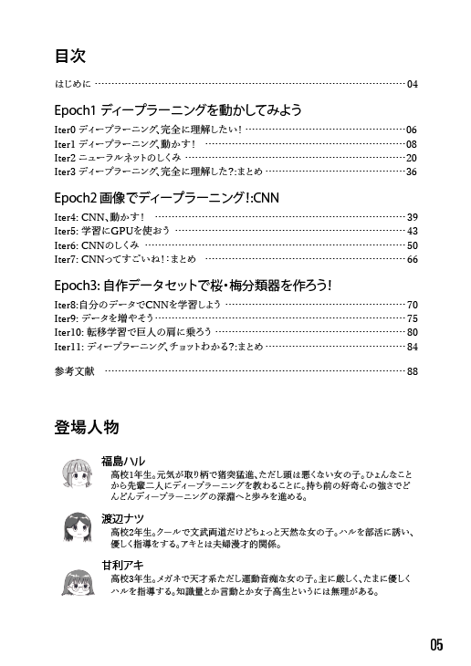
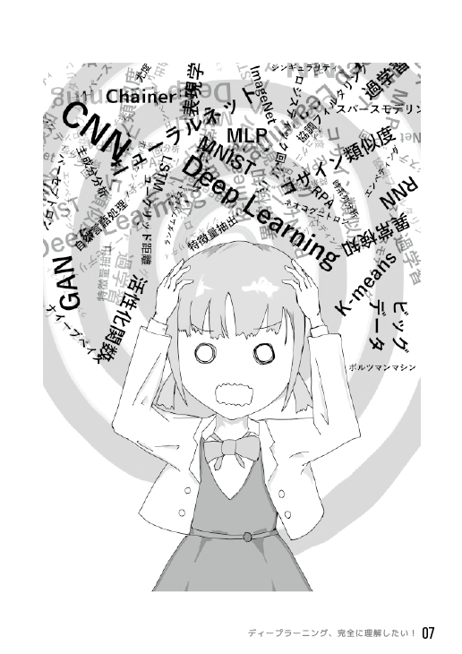
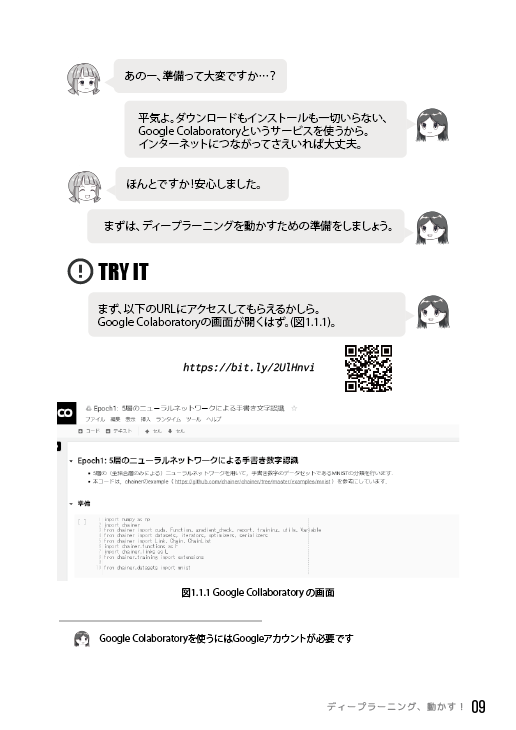

著者紹介
KJ(文章)：都の西北大情報系M2。
百合(花じゃない方)に傾倒してたら就活が危うくなっているので、内定をくださる心の優しい方を探しています。 P.S. やがて君になる7巻は4/26発売です。 twitter @cookieices
百合(花じゃない方)に傾倒してたら就活が危うくなっているので、内定をくださる心の優しい方を探しています。 P.S. やがて君になる7巻は4/26発売です。 twitter @cookieices
d_yuji(デザイン・挿絵)：都の西北大情報系M2。就活助けてください。
P.S.ゆるキャン△8巻は2019年4月26日発売です。よろしくお願いします。
twitter @dyuji1
mofumofu(技術)： 都の西北大情報系M2。
ディープラーニング全然分からないのに本当にすみません…。 twitter @mofumofu1729
ディープラーニング全然分からないのに本当にすみません…。 twitter @mofumofu1729
スクリーンショット

目次と人物紹介
個性豊かなキャラクターたちが作品を盛り上げていきます

専門書を読んだ主人公
こんな風になっちゃう人でもこの本なら大丈夫

対話形式での説明
ちょっと難しい内容も、優しい先輩が丁寧に教えてくれます
目次
第1章 ディープラーニングを動かしてみよう
ディープラーニング、完全に理解したい！
ディープラーニング、動かす！
ニューラルネットのしくみ
ディープラーニング、完全に理解した？:まとめ
第2章 画像でディープラーニング！:CNN
CNN、動かす！学習にGPUを使おう
CNNのしくみ
CNNってすごいね！：まとめ
第3章 自作データセットで桜・梅分類器を作ろう！
自分のデータでCNNを学習しようデータを増やそう
転移学習で巨人の肩に乗ろう
ディープラーニング、チョットわかる？:まとめ